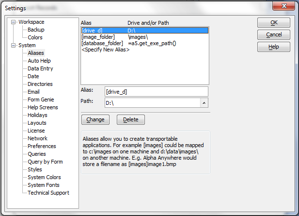

Aliases
Aliases let you create transportable applications. An "Alias" in Alpha Anywhere refers to a name you assign to represent a local directory on a computer where workspace information is stored.
You can define file aliases on the Aliases tab in the Settings dialog. For example, the alias image_folder can refer to c:\images\ on one user's machine, and d:\data\images on another machine. Aliases are particularly useful if you use Image File Reference fields, which store image filenames in the field rather than the image data.
When you transport the workspace and the folder which contains the images to another machine that has different drive mappings, all that you have to do on the new machine is ensure that an appropriate entry exists in the alias table. (The aliases are actually stored in the a_aliases.ini text file in the Alpha Anywhere program folder.
The alias reference can be an explicit drive/path, or it can be an expression that evaluates to a drive/path. For example, in the picture below, the alias exepath is set to =a5.get_exe_path( ". To specify an expression, prefix the expression with "=".

See Also
A5.GET_EXE_PATH(), A5.GET_MASTER_PATH(), A5.GET_PRIVATE_PATH(), A5.GET_SHARED_PATH()